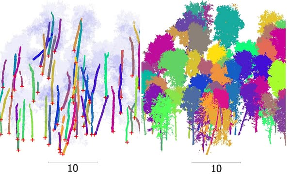
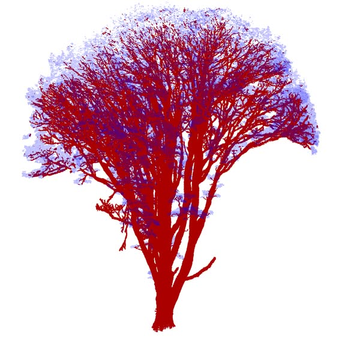
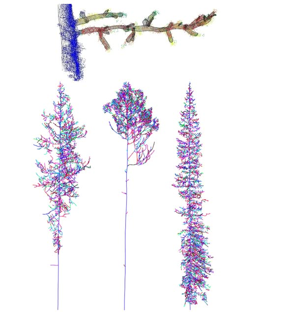
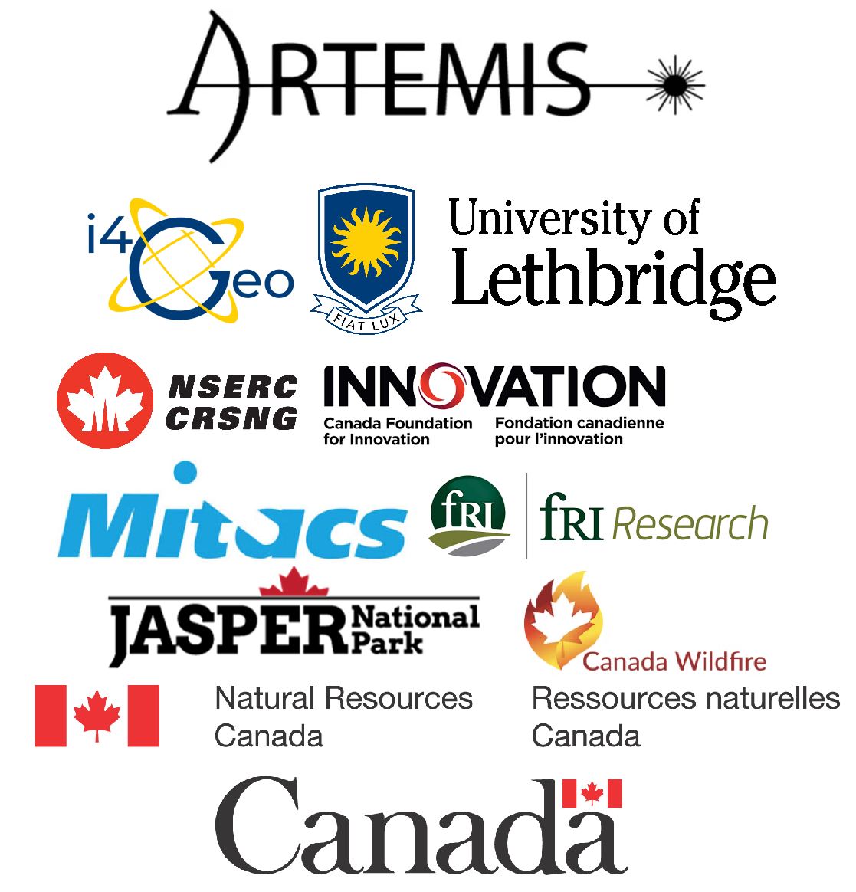

TreeFiltering
TreeisoNet
WoodCls
QSM
About
Filtering trees from ground and understory

Copy reference to clipboard
Copied!
Please reference the publication if you find this tool helpful:
Xi, Zhouxin, Chris Hopkinson, and Laura Chasmer. "Supervised terrestrial to airborne laser scanner model calibration for 3D individual-tree attribute mapping using deep neural networks." ISPRS Journal of Photogrammetry and Remote Sensing 209 (2024): 324-343.
https://doi.org/10.1016/j.isprsjprs.2024.02.010
Sensor
DTM
Create the DTM grid points from the TreeFilter class
Predefined models
TreeisoNet

Copy reference to clipboard
Copied!
Please reference the publication if you find this tool helpful:
Xi, Zhouxin, and Dani Degenhardt. "A new unified framework for supervised 3D crown segmentation (TreeisoNet) using deep neural networks across airborne, UAV-borne, and terrestrial laser scans." ISPRS Open Journal of Photogrammetry and Remote Sensing 15 (2025): 100083. https://doi.org/10.1016/j.ophoto.2025.100083
TreeisoNet steps: 1. classify stems (if any), 2. extract tree locations (stem bases or tree tops), 3. segment stems or trees, and 4. cluster crowns. Non-AI methods are also optional. You can manually edit intermediate results for optimal results.
Scene
Sensor
Modules
Remove the isolated clusters based on connected components
Predefined models
Export
Export the tree height and area statistics to csv based on the tree segments
Wood filtering from TLS

Copy reference to clipboard
Copied!
Please reference the publication if you find this tool helpful:
Xi, Zhouxin, Chris Hopkinson, and Laura Chasmer."Filtering stems and branches from terrestrial laser scanning point clouds using deep 3-D fully convolutional networks." Remote Sensing 10.8 (2018): 1215.
https://doi.org/10.3390/rs10081215
Xi, Zhouxin, Laura Chasmer, and Chris Hopkinson. "Delineating and Reconstructing 3D Forest Fuel Components and Volumes with Terrestrial Laser Scanning." Remote Sensing 15.19 (2023): 4778.
https://doi.org/10.3390/rs15194778
Sensor
Component
Predefined models
Plot-level quantitative structural modeling

Copy reference to clipboard
Copied!
Please reference the publication if you find this tool helpful:
Xi, Zhouxin, Laura Chasmer, and Chris Hopkinson. "Delineating and Reconstructing 3D Forest Fuel Components and Volumes with Terrestrial Laser Scanning." Remote Sensing 15.19 (2023): 4778.
https://doi.org/10.3390/rs15194778
Please ensure the selected point cloud(s) have a scalar field of "stemcls" identifying the stem class. This can be obtained by from the TreeisoNet or WoodCls tab. You can also provide the "branchcls" scalar field (optional) indicating the branch classes.
Initial segmentation: cut-pursuit
Skeletonization
About TreeAIBox

TreeAIBox is a collaborative initiative bringing together expertise from various institutions
About Us
Developer: Zhouxin Xi, Canadian Forest Service, Natural Resources Canada
Supervision and support:
TreeFiltering/WoodCls/QSM: Chris Hopkinson and Laura Chasmer, ARTEMIS / PEATERS Laboratory, i4Geo, University of Lethbridge
TreeisoNet: Dani Degenhardt, Canadian Forest Service, Natural Resources Canada
Data Credit
Training reference dataset were manually cleaned, originated from:
- TLS: Jasper National Park plot scans collected by University of Lethbridge
- TLS: Plot scans collected by University of Lethbridge and during 2014-2020 and scans by Finnish Geodetic Institute during 2014
- ALS: Eastern Slopes of Alberta scans collected by University of Lethbridge
- UAV: Reclamation UAV drone scans collected by Natural Resources Canada
- UAV: FOR-instance dataset from Puliti S, Pearse G, Surový P, et al.(2023).